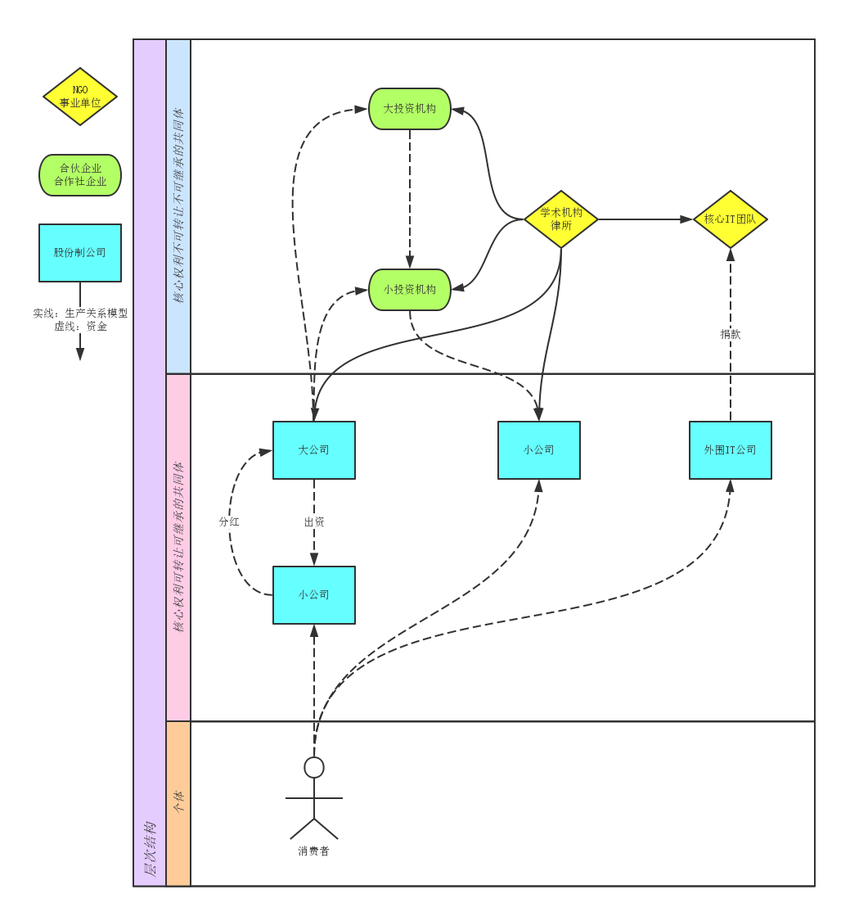
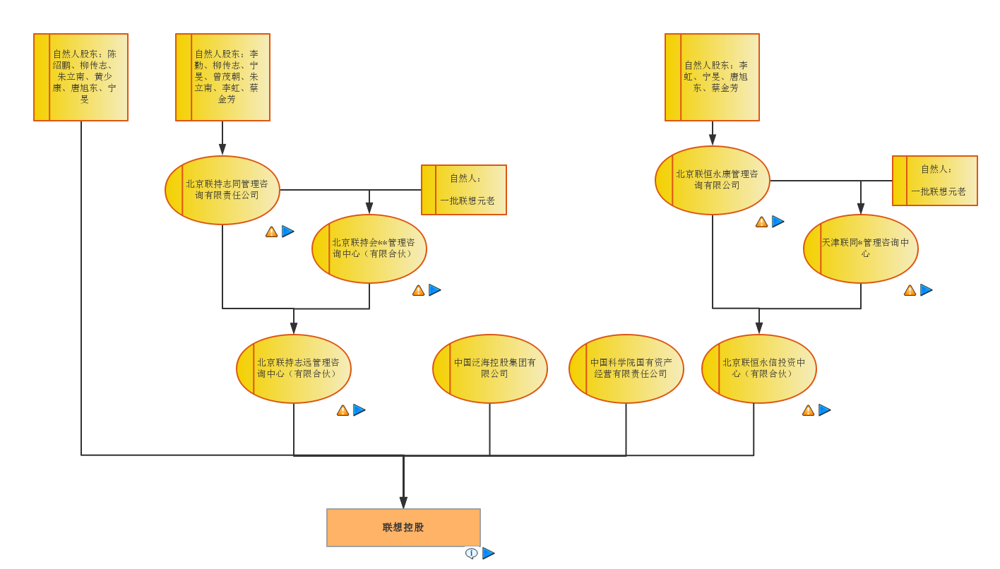

class: center, middle # 章程规定 ### 筹备阶段 [一] --- class: center, middle, inverse #内容与定位 --- .left-column[ ### 内容与定位 #### 适用人群 ] .right-column[ 本讲座内容适合以下创业者： ### 核心团队已经召集到位，且熟悉业务 ### 创办企业，由企业去创造产品 ### 主要讨论有限责任公司 还有其它需求的可以咨询其它讲座信息，或“管理体系设计与实施”业务。 ] --- .left-column[ ### 内容与定位 #### 适用人群 #### 阶段划分 ] .right-column[ ### 筹备期：正式工商设立前。 * 企业／合同法规，章程制定方法 * 各类合作模式、及筹备过程 * 融资机制设计 ### 初创期：工商设立后，收支平衡前。 * 核心职权的高效管理 * 核心职权和外围职权的衔接 ### 稳定期：工商设立后，收支平衡后。 * 新业务和项目 * 新老团队的衔接 ] --- .left-column[ ### 内容与定位 #### 适用人群 #### 阶段划分 #### 核心职权 ] .right-column[ <img src="img/kernel.png" width=512></img> [待续...] ] --- class: center, middle, inverse #职权 --- .left-column[ ### 职权 #### 第三十七条 ] .right-column[ ##股东会行使下列职权： ###... ###（十一）公司章程规定的其他职权。 ] --- .left-column[ ### 职权 #### 第三十七条 #### 第四十六条 ] .right-column[ ##董事会对股东会负责，行使下列职权： ###... ###（十一）公司章程规定的其他职权。 ] --- .left-column[ ### 职权 #### 第三十七条 #### 第四十六条 #### 第四十九条 ] .right-column[ ##有限责任公司可以设经理，由董事会决定聘任或者解聘。经理对董事会负责，行使下列职权： ###... ###公司章程对经理职权另有规定的，从其规定。 ] --- .left-column[ ### 职权 #### 第三十七条 #### 第四十六条 #### 第四十九条 #### 第五十条 ] .right-column[ ##股东人数较少或者规模较小的有限责任公司，可以设一名执行董事，不设董事会。执行董事可以兼任公司经理。 ##执行董事的职权由公司章程规定。 ] --- .left-column[ ### 职权 #### 第三十七条 #### 第四十六条 #### 第四十九条 #### 第五十条 #### 第五十三条 ] .right-column[ ##监事会、不设监事会的公司的监事行使下列职权： ###... ###（七）公司章程规定的其他职权。 ] --- .left-column[ ### 职权 #### 第三十七条 #### 第四十六条 #### 第四十九条 #### 第五十条 #### 第五十三条 #### 专业相关职权 ] .right-column[ 在具体业务里，存在一些重要程度不亚于现金的资产。 ] --- .left-column[ ### 职权 #### 第三十七条 #### 第四十六条 #### 第四十九条 #### 第五十条 #### 第五十三条 #### 专业相关职权 ] .right-column[ 在具体业务里，存在一些重要程度不亚于现金的资产。 ##根证书、密钥 ] --- .left-column[ ### 职权 #### 第三十七条 #### 第四十六条 #### 第四十九条 #### 第五十条 #### 第五十三条 #### 专业相关职权 ] .right-column[ 在具体业务里，存在一些重要程度不亚于现金的资产。 ##根证书、密钥 ##基因库 ] --- .left-column[ ### 职权 #### 第三十七条 #### 第四十六条 #### 第四十九条 #### 第五十条 #### 第五十三条 #### 专业相关职权 ] .right-column[ 在具体业务里，存在一些重要程度不亚于现金的资产。 ##根证书、密钥 ##基因库 ##关键配方 ] --- .left-column[ ### 职权 #### 第三十七条 #### 第四十六条 #### 第四十九条 #### 第五十条 #### 第五十三条 #### 专业相关职权 ] .right-column[ 在具体业务里，存在一些重要程度不亚于现金的资产。 ##根证书、密钥 ##基因库 ##关键配方 ##...... 1. 如果使用传统模版，则由董事会决定管理部门及规章。如果董事渎职，则由经理甚至外围部门实际控制。 2. 称职的股东，则通过章程直接规定相关职权。 ] --- class: center, middle ##联邦储备系统(非有限责任公司) http://www.federalreserve.gov/pubs/frseries/frseri.htm * The Board sets reserve requirements and shares the responsibility with the Reserve Banks for discount rate policy. These two functions plus open market operations constitute the monetary policy tools of the Federal Reserve System. --- class: center, middle ##思考题： 你所经营的业务里，存在哪些特有的关键资产（或职权）。 --- .left-column[ ### 职权 #### 第三十七条 #### 第四十六条 #### 第四十九条 #### 第五十条 #### 第五十三条 #### 专业相关职权 #### 分配核心职权 ] .right-column[ 经典的核心职权分配，并不能适应所有业务。 ### 经理职权 ==> 董事会 ### 经理职权 ==> 股东会 ### 经理职权 ==> 监事会 ### 执行董事职权 ==> ... ### ... ==> 职工代表、工会、特设委员会 ] --- class: center, middle ##华为章程(早期.内部版) ###（高层管理组织） 第五十一条 高层管理组织的基本结构为三部分：公司执行委员会、高层管理委员会与公司职能部门。 公司的高层管理委员会有：战略规划委员会、人力资源委员会、财经管理委员会。 ###（高层管理职责） 第五十二条 公司执行委员会负责确定公司未来的使命、战略与目标，对公司重大问题进行决策，确保公司可持续成长。 高层管理委员会是由资深人员组成的咨询机构。负责拟制战略规划和基本政策，审议预算和重大投资项目，以及审核规划、基本政策和预算的执行结果。审议结果由总裁办公会议批准执行。 公司职能部门代表公司总裁对公司公共资源进行管理，对各事业部、子公司、业务部门进行指导和监控。 公司职能部门应归口设立，以尽量避免多头领导现象。 高层管理任务应以项目形式予以落实。高层管理项目完成后，行程具体工作和制度，并入职能部门的职责。 http://doc.mbalib.com/view/fe5da0dcf160283adb1c42d8a0e30d06.html --- class: center, middle ##思考题 你所创立的企业里，有哪些核心职权需要重新分配？ --- class: center, middle, inverse #议事规则 --- .left-column[ ### 议事规则 #### 第三十九条 ] .right-column[ ##股东会会议分为定期会议和临时会议。 ##定期会议应当依照公司章程的规定按时召开。 ] --- .left-column[ ### 议事规则 #### 第三十九条 #### 第四十一条 ] .right-column[ ## 召开股东会会议，应当于会议召开十五日前通知全体股东；但是，公司章程另有规定或者全体股东另有约定的除外...... ] --- .left-column[ ### 议事规则 #### 第三十九条 #### 第四十一条 #### 第四十二条 ] .right-column[ ##股东会会议由股东按照出资比例行使表决权；但是，公司章程另有规定的除外。 ] --- .left-column[ ### 议事规则 #### 第三十九条 #### 第四十一条 #### 第四十二条 #### 第四十三条 ] .right-column[ ##股东会的议事方式和表决程序，除本法有规定的外，由公司章程规定。股东会会议作出修改公司章程、增加或者减少注册资本的决议，以及公司合并、分立、解散或者变更公司形式的决议，必须经代表三分之二以上表决权的股东通过。 ] --- .left-column[ ### 议事规则 #### 第三十九条 #### 第四十一条 #### 第四十二条 #### 第四十三条 #### 第四十八条 ] .right-column[ ##董事会的议事方式和表决程序，除本法有规定的外，由公司章程规定......董事会决议的表决，实行一人一票。 ] --- .left-column[ ### 议事规则 #### 第三十九条 #### 第四十一条 #### 第四十二条 #### 第四十三条 #### 第四十八条 #### 第五十五条 ] .right-column[ ##监事会每年度至少召开一次会议，监事可以提议召开临时监事会会议。 ##监事会的议事方式和表决程序，除本法有规定的外，由公司章程规定。 ##监事会决议应当经半数以上监事通过。 ] --- .left-column[ ### 议事规则 #### 第三十九条 #### 第四十一条 #### 第四十二条 #### 第四十三条 #### 第四十八条 #### 第五十五条 #### 提高决策质量 ] .right-column[ 调节股东会、董事会、监事会的议事规则，可以实现预期的决策质量。 ##同股不同权 ##召集规定 ##席位数 ##特定种类的决议 ##“一票否决”机制 ] ??? 美国参议院100人，公司董事会：google 10人，cisco 14人，HP 12人 （2013-10-20数据）。 --- class: center, middle ##累积投票制 cumulative voting | http://baike.baidu.com/view/602365.htm 在实行累积投票时，股东的表决权票数是按照股东所持有的股票数与所选举的董事或监事人数的乘积计算，而不是直接按照股东所持有的股票数计算。 与累积投票制相对应的概念是直线投票制（Straight Voting System），又称非累积投票制（Non-cumulative voting），也称联选投票制。所谓直线投票制，就是股东将自己的选票平均地投给自己的候选人。 --- class: center, middle ##思考题 为了确保决策质量优势，你打算怎么分配各级决策权？ --- class: center, middle, inverse #任免 --- .left-column[ ### 任免 #### 第四十四条 ] .right-column[ ##...董事长、副董事长的产生办法由公司章程规定。 ] --- .left-column[ ### 任免 #### 第四十四条 #### 第四十五条 ] .right-column[ ##董事任期由公司章程规定，但每届任期不得超过三年... ] --- .left-column[ ### 任免 #### 第四十四条 #### 第四十五条 #### 第五十一条 ] .right-column[ ##有限责任公司设监事会，其成员不得少于三人...... ##监事会应当包括股东代表和适当比例的公司职工代表，其中职工代表的比例不得低于三分之一，具体比例由公司章程规定...... ] --- .left-column[ ### 任免 #### 第四十四条 #### 第四十五条 #### 第五十一条 #### 第二百一十六条 ] .right-column[ ##... 高级管理人员，是指公司的经理、副经理、财务负责人，上市公司董事会秘书和公司章程规定的其他人员。 ###第十一条：...公司章程对公司、股东、董事、监事、高级管理人员具有约束力。 ] --- class: center, middle ##德国职工共同决策制度 德国公司治理是建立在「共同决定制」的原则基础上，以监督职能为中心构建委员会。监事会的成员由股东代表（资方监事）和员工代表（劳方监事）各占半，监事会不仅行使监督权，还有董事任免权、董事报酬决策权、及重大业务批准权等。 --- class: center, middle ##思考题 根据你设计的董事会职权，应该配套什么样的董事长产生办法和任期？ --- class: center, middle, inverse #转让与继承 --- .left-column[ ### 转让与继承 #### 第七十一条 ] .right-column[ ##有限责任公司的股东之间可以相互转让其全部或者部分股权... ##公司章程对股权转让另有规定的，从其规定。 ###注意第七十三条:“...对公司章程的该项修改不需再由股东会表决。 ” ] --- .left-column[ ### 转让与继承 #### 第七十一条 #### 第七十五条 ] .right-column[ ##自然人股东死亡后，其合法继承人可以继承股东资格；但是，公司章程另有规定的除外。 ] --- .left-column[ ### 转让与继承 #### 第七十一条 #### 第七十五条 #### 层次图 ] .right-column[ </img> ] --- .left-column[ ### 转让与继承 #### 第七十一条 #### 第七十五条 #### 层次图 #### 设计原则 ] .right-column[ ## 股东投入的是可转让、可继承资产，股份应该可转让、可继承。 ## 股东投入的是不可转让、不可继承的资产，应规定其股份不可转让、不可继承。 范例：网店（商誉）、球队、乐队、驾照...... ] --- class: center, middle ##思考题 为了形成竞争优势，你的企业要（以不可转让、不可继承的股份）锁住哪些资产？ --- .left-column[ ### 内容与定位 #### 适用人群 #### 阶段划分 #### 核心职权 #### 企业集群 ] .right-column[ [续]由于单个企业的局限，我们需要集群作战。 </img> 由不同种类企业、自然人通过合同关系缔结为整体。 ] --- .left-column[ ### 内容与定位 #### 适用人群 #### 阶段划分 #### 核心职权 #### 企业集群 #### 管理体系设计与实施 ] .right-column[ ###企业集群是怎么形成的？ * 过去：以单个企业起步，逐步扩展。 * 将来：整体设计、分布实施。 ###“二次创业” * 跨企业、跨阶段的契约 ###章程 | 合同 | 方程 * 合同法以下的世界 * 跨国的语言 ###设计 | 实施 * 实施是要适应当地工商政策和尺度，自身团队知识情况和性格，设计具体的落地方式。 * 不同的规律、工具、方法学 ] --- .left-column[ ### 内容与定位 #### 适用人群 #### 阶段划分 #### 核心职权 #### 企业集群 #### 管理体系设计与实施 ] .right-column[ ###交流 * 主题讲座 * 封闭交流 ###管理体系设计 * 调研->设计->培训 * 竞争形势分级 ###管理体系实施 * 业务协办、业务代办、课题研究、常年咨询 根据客户是否愿意成为公开案例；客户会计是否愿意为后面的会计提供顾问服务；团队内部是否遵守相关的仪式规则；所有职权的行驶是否以书面 形式下达等情况，进行具体协商。 ] --- class: center, middle, inverse # 7月15日 ## 章程规定 | 核心职权 --- class: center, middle ##复习题 一家有限责任公司创立之初，一名创始人认为股东会和董事会应该合并。请引用明确的法律条款，替他起草一份正式动议。 --- class: center, middle ##复习题 这家公司的经营决策工作已超出股东能力，需要建立更专业的董事会。请引用明确的法律条款，替创始人起草一份正式动议。 --- class: center, middle # 筹备协议 ### 筹备阶段 [二] --- class: center, middle, inverse #内容与定位 --- .left-column[ ### 内容与定位 #### 筹备期 ] .right-column[ ### 全职地筹备 ### 书面的筹备目标和检验标准 ### 清晰的团队成员名单 ### 大致的分工，但每个任务有明确承诺 ] --- .left-column[ ### 内容与定位 #### 筹备期 #### 谁属于筹备组 ] .right-column[ ## 目标导向： ### 完成章程（合伙协议）起草，并全体通过。 ### 接收筹备期的业务成果 ### 核定筹备期的贡献多少 ### 主持第一轮选举 注意：具体业务办理不应纳入筹备工作，但任务承担者必须承诺把业务成果移交筹备组，接受筹备组的核定结果。 ] --- .left-column[ ### 内容与定位 #### 筹备期 #### 谁属于筹备组 #### 怎么加入筹备组 ] .right-column[ ### 开放 + 竞争 ### 规定工作要求： * 橡皮图章，不欢迎。 * 仅仅是业务骨干，不欢迎。 * 相应的历史记录。 ### 有意加入第一届核心团队的，必须书面声明，并回避相关工作。 ] --- .left-column[ ### 内容与定位 #### 筹备期 #### 谁属于筹备组 #### 怎么加入筹备组 #### 定义失败 ] .right-column[ ## 筹备失败应有明确的定义 * 筹备期限 * 筹备结果：企业设立 * 资产顺利接收 * 作为出资 * 筹备期业务进展 * 产生核心团队 ## 失败后的处理应有明确程序 ] --- class: center, middle ##思考题 请书面整理你所创立的企业（集群）的筹备协议，包括书面的、口头的、统一的、分别的...，如果需要可以电话询问其他筹备成员。 --- class: center, middle, inverse #总则 --- .left-column[ ### 总则 #### 明确始发成员 ] .right-column[ 团队成员p1,p2,p3,p4,p5,p6,p7经协商决定于201x年mm月dd日成立筹备组，p1作为筹备组召集人,p2,p3为筹备组成员。当筹备组成员不能按时完成工作时，p1可以委任新的筹备组成员。 ### p1~p7列出具体人名和身份证号 ### 全体签字认可筹备协议 ] --- .left-column[ ### 总则 #### 明确始发成员 #### 参选声明 ] .right-column[ 有志于出任董事、监事、经理职务的筹备组成员，应在加入时声明。 ###附上p1,p2,p3声明： * 我自愿放弃出任第一届xx、xx职务的机会，特此声明。 * 我有意参选第一届xx职务，承诺严格遵照筹备组召集人的指令回避相关工作，特此声明。 ###后续加入的筹备组成员，应同时出具书面声明。 ] --- .left-column[ ### 总则 #### 明确始发成员 #### 参选声明 #### 退出机制 ] .right-column[ ###出现以下情况的成员退出筹备组： 1. 筹备会议缺席或累计x次请假的； 2. 筹备会议表决时不投票、投无效票的； 3. 经主持人提醒后仍然违反议事规则的； 4. 不执行筹备会议决议的； 5. 不能按时完成筹备任务的。 ] --- .left-column[ ### 总则 #### 明确始发成员 #### 参选声明 #### 退出机制 #### 成功解散 ] .right-column[ ###第一届xx、xx选举产生后，筹备组自动解散 ###筹备组解散前向xxx移交文件 1. 章程。 2. 历次筹备会议记录、纪要。 3. 已完成的内部机构设置、管理制度、工资报酬标准。 4. 截止到解散时间的资金流量表及原始单据。 5. 截止到解散时间的合同、协议及工作表单。 6. 已在使用的各类账号、密码。 7. 办理设立手续相关材料及结果证照。 ] --- .left-column[ ### 总则 #### 明确始发成员 #### 参选声明 #### 退出机制 #### 成功解散 #### 失败解散 ] .right-column[ ### 如果在201x年m2月d2日未能完成筹备工作，筹备组解散。 ### 筹备期间的工作成果由p4咨询所有团队成员意见后，决定清算、分配方案并组织执行。 * 附上p4的承诺书。 * p4应该不属于筹备组成员，如果后期加入应另外安排清算人。 ] --- class: center, middle, inverse #筹备工作 --- .left-column[ ### 筹备工作 #### 权力机构 ] .right-column[ ### 制定章程。 ### 主持第一届董事会、监事会选举。 ### 办理设立手续。 ### 补登工作结果（包括筹备工作），其中： * 201x年m1月d1日及以前的工作按照m00%登记报酬； * 201x年m1月d1日至筹备成功的工作按照n00%登记报酬。 ### 注意事项 * 根据筹备失败的风险估定比率，应高于团队成员平均预期，以便筹备期间强化工作纪律。 * 筹备工作一般适用董事报酬标准。 ] --- .left-column[ ### 筹备工作 #### 权力机构 #### 决策与执行 ] .right-column[ ### 制定内部机构设置、管理制度、工资报酬标准。 ### 现有团队成员未签订正式合同的，制定合同并与安排补签。 ### 整理过往工作记录、单据、表单，财务数据，资产。 ] --- .left-column[ ### 筹备工作 #### 权力机构 #### 决策与执行 #### 召集人 ] .right-column[ ##具体分工由召集人安排。 * 明确分工安排的发布方式。 * 明确失职的标准和处置程序。 * 召集人不得参与第一届核心团队。 ##筹备组成员的工作支出，由召集人审核后报销。 ] --- class: center, middle, inverse #筹备会议 --- .left-column[ ### 筹备会议 #### 议程 ] .right-column[ ### 收集、确认、统计筹备组成立前的工作成果和材料。 ### 确定各项筹备工作的负责人、工作结果、提交期限、预算、奖惩。 * 期限前在筹备会议通过为完成标准。 ### 合理安排审议与表决的时间 ### 固有工作应安排固定议程。 ### 临时议程应有召集和准备规定，工作节奏应符合筹备要求。 ] --- .left-column[ ### 筹备会议 #### 议程 #### 议事规则 ] .right-column[ ### 权重分配 * 代表资源投入方加入筹备组的，可以分配一定权重。 * 因工作能力加入筹备组的，可以一人一票。 ### 筹备组可以不设弃权票，并要求书面出具审议意见。 ### 计票规定：筹备成功即可实际运行。 ### 筹备会议应当制作会议记录。形成决议的，应当当场制作会议纪要，并由出席会议的筹备组成员审阅、签名。 ] --- .left-column[ ### 筹备会议 #### 议程 #### 议事规则 #### 工作透明度 ] .right-column[ ### 总体来说，工作节奏更高、程序更简单，因此要求应高于设立后的核心团队。 ### 明确工作信息发布方式。 * 应确保筹备组无法删改。 ### 当天发布 * 召集人安排的具体分工 ### 最晚次日（或一个工作日内）发布 * 筹备组成员名单、新成员加入、成员退出等事件 * 筹备会议的会议通知、会议记录、会议纪要 ] --- class: center, middle ##亚洲基础设施投资银行 Asian Infrastructure Investment Bank 章程： http://www.mof.gov.cn/zhengwuxinxi/caizhengxinwen/201506/P020150629360882378045.pdf http://www.mof.gov.cn/zhengwuxinxi/caizhengxinwen/201506/P020150629360882722541.pdf 理事会和董事会的分工有什么特色？ 决策权重是怎么分配的？ --- class: center, middle ##复习题 企业筹备组应该有哪些人员组成？与企业董事会的人员组成有什么差异，原因是什么？ --- class: center, middle ##复习题 在筹备期间，企业创始人要接受哪些检验？如何设计筹备工作步骤，实现以上检验？ --- class: center, middle # 融资机制 --- .left-column[ ### 内容与定位 #### 多产品企业 ] .right-column[ ### 同时运行多个产品。 ### 不断持续创立新的产品。 ### 产品从立项起就处于对抗之中，无法排除干扰。 ] --- .left-column[ ### 内容与定位 #### 多产品企业 #### 资金需求 ] .right-column[ ### 启动资金：筹备->第一批最小可用产品 ### 孵化资金：产品规划->最小可用产品 ### 运营资金：最小可用产品->收支平衡 ] --- .left-column[ ### 内容与定位 #### 多产品企业 #### 资金需求 #### 工作难点 ] .right-column[ ### 资金需求不确定 #### 在企业级的投入产出规则之外，增设产品一级的投入产出规则，并使后者的效力高于前者。 #### 筹备阶段设定企业：产品的利益分配，跟随适应竞争需要。 ### 资金的投入产出通道被孤立。 #### 统一的通道。 #### 持续的通道使用者。 ] --- class: center, middle, inverse #公司 --- .left-column[ ### 公司 #### 启动资金 ] .right-column[ ### 启动资金 --> 出资，获得股份 ### 捆绑的决策权 ### 从利润持续分配利益 ] --- .left-column[ ### 公司 #### 启动资金 #### 孵化资金 ] .right-column[ ### 增资扩股 ### 借款、贷款、政府资助：支付利息 ### 众筹、预售产品、供应链账期：提供优惠价格 ] --- .left-column[ ### 公司 #### 启动资金 #### 孵化资金 #### 运营资金 ] .right-column[ ### 股份、借款、合作多种途径 ### 创始团队撤出、运营团队接管 ] --- class: center, middle, inverse #合伙企业 --- .left-column[ ### 合伙企业 #### 启动资金 ] .right-column[ ### 有限合伙人 ### 不参与合伙事务 ### 从利润持续分配利益 ] --- .left-column[ ### 合伙企业 #### 启动资金 #### 孵化运营 ] .right-column[ ### 与公司基本相同 ### 合伙人的加入、退伙 ] --- class: center, middle ##范例 [联合产品部](https://github.com/xuemen/xuemen/blob/master/S2/2-4.%E8%81%94%E5%90%88%E4%BA%A7%E5%93%81%E9%83%A8%E6%A8%A1%E5%9E%8B.md) | [脊椎亚门](https://github.com/hyg/cod.template/tree/master/Vertebrate) --- class: center, middle # 核心职权 --- class: center, middle, inverse #议事规则 --- .left-column[ ### 议事规则 #### 内容与定位 ] .right-column[ ##一个组织的议事规则应该包括哪些规定？ ###请在纸上写出规则章节提纲。 ] --- .left-column[ ### 议事规则 #### 内容与定位 #### 训练1:整理 ] .right-column[ ##你所创办/筹备的企业，当前事实上的议事规则是什么？（包括小范围实践） ###请按照刚才列出的章节提纲整理，如果有公开产物（动议、纪要、决议...）请列出。 ] --- .left-column[ ### 议事规则 #### 内容与定位 #### 训练1:整理 #### 训练2:远程协作 ] .right-column[ ##一个远程协作团队，需要对罗伯特议事规则进行哪些修改？ ###请写出所使用的罗伯特议事规则版本、条款编号、修改后的内容。 ] --- .left-column[ ### 议事规则 #### 内容与定位 #### 训练1:整理 #### 训练2:远程协作 #### 训练3:异步协作 ] .right-column[ ##有一个团队的决策者在不同时区漫游，他们不定时参与议事。这种情况下，需要对罗伯特议事规则进行哪些修改？ ###请写出所使用的罗伯特议事规则版本、条款编号、修改后的内容。 ] --- .left-column[ ### 议事规则 #### 内容与定位 #### 训练1:整理 #### 训练2:远程协作 #### 训练3:异步协作 #### 训练4:设计 ] .right-column[ ##你所创办/筹备的企业中，决策过程有什么与众不同的地方？请设计一套专属议事规则，适应这些特点。 ###请写出具体条款，如能征集核心团队成员意见请一并列出。 ] --- class: center, middle, inverse #企业集群 --- .left-column[ ### 企业集群 #### 内容与定位 ] .right-column[ ##由多个企业、自然人构成的共同体，企业种类可能包括公司、合伙企业等不同种类，各局部之间的契约也包括公开的、不公开的。在这个阶段，各企业的核心团队构成企业集群的核心团队。 企业集群**核心团队**的协作、分配规则和具体管理规章，包括书面的、口头的、甚至心理的契约，也包括公开的、不公开的、小范围公开的。 ] --- .left-column[ ### 企业集群 #### 内容与定位 #### 训练1:整理 ] .right-column[ ##整理联想企业集群的架构。 ###以图文结合的方式列出集群内的企业，以及它们之间的关系。 ] --- .left-column[ ### 企业集群 #### 内容与定位 #### 训练1:整理 #### 训练2:设计 ] .right-column[ ##以联想企业集群为例，设计**核心团队**的议事规则。 ###请写出具体条款，与法律衔接处注明法律名称及条款。 ] --- class: center, middle # 外围衔接 --- class: center, middle, inverse #内容与定位 --- .left-column[ ### 内容与定位 #### 案例：高层邮件 ] .right-column[ ### N公司有三名创始人，他们各自发布了一些部门规章。当规章出现冲突（或缺位）时，员工同时向三位创始人发email，然后持回复email要求其它部门配合工作。当这些email互相矛盾时，员工们自行解决。 实际上，三位创始人并没有精力就每件事情协商，多数时候只是根据个人一时一事的观点回复。对这些email，N公司也没有归档管理，这些“高层email”分散在不同员工手里，由员工酌情使用。 ] --- .left-column[ ### 内容与定位 #### 案例：高层邮件 #### 一体化管理 ] .right-column[ ### 许多情况下，核心团队与外围团队工作脱节，与核心团队渎职是互为因果。 ### 称职的核心团队，也很难修复已经支离破碎的企业。 ### 初创阶段形成一体化的管理体系，是最有效的方案。 在合理的制度下：只有外围资质的人员，即使是初创成员，也自愿选择到外围工作。 ] --- .left-column[ ### 内容与定位 #### 案例：高层邮件 #### 一体化管理 #### 保持差异 ] .right-column[ ### 核心团队与外围团队在责任轻重和广度、问题的创新性和综合性等方面仍有明显差异。 工作衔接的同时，也要考虑到这些差异。 ] --- class: center, middle ##思考题 核心团队和外围团队的管理体系，要在哪些方面实现统一？ --- class: center, middle, inverse #投入产出 一体化管理[1] --- .left-column[ ### 投入产出 #### 风险和成本 ] .right-column[ ### 无论投入资金、时间、知识、人际关系，都是与企业的交换。 ### 投入到产出的时间越长，风险越高。 ### 投入到产出的人工裁量环节越多，风险越高。 ### 企业内同时运行的投入产出规则越多，立场分歧越大。 ] --- .left-column[ ### 投入产出 #### 风险和成本 #### 核心团队 ] .right-column[ ### 创业早期的风险大，此时投入的回报应该更高。 ### 创业早期的工作量大，因此回报应该更高。 ### 决策工作综合性高、突发性强、知识更新快、难度高，因此回报应该更高。 为了防止你们侵占这些合理利益，我们需要控制核心职权。 ] --- .left-column[ ### 投入产出 #### 风险和成本 #### 核心团队 #### 外围团队 ] .right-column[ ### 风险大、工作量大、难度高，具体记录在哪里，怎么量化评估。 ### 按我们的标准，现在的工作风险、工作量、难度不亚于创业早期。 ### 无论早期还是选择的核心职权，我们也可以承担，但是没有上升通道。 为了防止你们无休止的索取，我们要架空核心职权。 ] --- .left-column[ ### 投入产出 #### 风险和成本 #### 核心团队 #### 外围团队 #### 方法1:风险倍数 ] .right-column[ ### 跨越阶段时发放奖金 ### (内部记账单位)报酬在跨越阶段时递降 ### 保底工作往往需要处理非专业的任务，因此考核结果较低，需要安排较高倍数作为补偿。 具体倍数在创立时锁定，应能适应常见的风险波动 ] --- .left-column[ ### 投入产出 #### 风险和成本 #### 核心团队 #### 外围团队 #### 方法1:风险倍数 #### 方法2:欠薪利息 ] .right-column[ ### 根据早期风险设置高薪 ### 规定资金底线，低于底线时不再发放报酬，计为欠薪。 ### 设定欠薪期限、利息，使早期创业团队的利益能量化表达。 常见的加班工资，持续值勤的报酬，也可以增大欠薪金额。 ] --- .left-column[ ### 投入产出 #### 风险和成本 #### 核心团队 #### 外围团队 #### 方法1:风险倍数 #### 方法2:欠薪利息 #### 原则 ] .right-column[ ### 投入的资金、时间、知识、人际关系...等资源之间，应有稳定的权重，或稳定的权重制定流程。确保各种资源可以公允的方式量化兑换。 ### 规则的所有条款在各时期都有新的使用者。有人，才可以持续强化规则。 ### 一切技巧，基础是创始人的诚信度和透明度。 ] --- class: center, middle, inverse #任免方式 一体化管理[2] --- .left-column[ ### 任免方式 #### 筹备阶段 ] .right-column[ ### 正规的筹备协议 ### 公开的竞聘 ### 公示时间、传播范围能覆盖后期外围团队人员所在群体 足够能力结构 + 足够多的人数 + 足够长时间 ， 可以加强竞聘结果的可信度。 ] --- .left-column[ ### 任免方式 #### 筹备阶段 #### 正式运营 ] .right-column[ ### 相同的工作结果管理方法：提交、分发、更新... ### 相似的质量检验步骤 ### 更高的奖惩幅度 ### 不可删改的书面记录 奖与惩的幅度同步增加，确保核心团队的淘汰压力高于外围团队。 ] --- class: center, middle ##思考题 核心团队和外围团队的管理体系，要在哪些方面保持差异？ --- class: center, middle, inverse #职责定义 差异化管理[1] --- .left-column[ ### 职责定义 #### 无限责任 ] .right-column[ ### 在信用体系不完善、信用记录不足时，核心团队可能需要承担无限责任。 ### 反担保：在担保人实力或信用记录不足时，核心团队提供反担保。 通常要以包括家庭成员的所有资产、收入进行担保。 ### 不设置无限责任的外围团队。 ] --- .left-column[ ### 职责定义 #### 无限责任 #### 不限时工作 ] .right-column[ ### 当特定事件出现时，企业需要在限定时间内回应。如果涉及核心职权，核心团队应保留基本的值勤人力。这种值勤通常是365*24的。 ### 核心职权涉及学习、调研、协调工作，属于开放性的任务，工作量和难度不确定。 ### 外围团队也有类似的值班工作，但通常只需要已知的技能，具体事件的工作量和难度相对固定。 ] --- .left-column[ ### 职责定义 #### 无限责任 #### 不限时工作 #### 保底工作 ] .right-column[ ### 因为制度欠缺，没有归口管理的任务。往往需要核心团队突击处理。 ### 因为归口人员失职，无人处理的工作需要核心团队突击处理。 创业早期的保底工作，往往涵盖全企业范围。 ### 外围团队的骨干也会承担类似保底工作，但范围较小，通常只覆盖特定部门或工种。 ] --- .left-column[ ### 职责定义 #### 无限责任 #### 不限时工作 #### 保底工作 #### 奖惩 ] .right-column[ ### 核心团队的奖惩幅度更大，才能甄选出过硬的人才。 ### 外围团队的经济方面奖惩的作用较明显。 ### 核心团队的任职资格、声誉方面的奖惩作用较明显。 ] --- class: center, middle, inverse #流程接口 差异化管理[2] --- .left-column[ ### 流程接口 #### 指令接口 ] .right-column[ ### 外围管理体系接收核心管理体系的指令。 ### 核心团队应保留撤销、修改外围团队所行使的职权的权力。 ### 指令完成情况的配套接口，应易于核心团队使用。 ] --- .left-column[ ### 流程接口 #### 指令接口 #### 数据接口 ] .right-column[ ### 外围业务流程、管理软件应向核心管理流程、管理软件提供数据接口，软件接口应是实时的。 ### 核心团队应保留外围管理软件的选型的权力。 ### 核心管理软件应先于外围管理软件规划、开发或购买。 ] --- class: center, middle ##方案设计 任选三家你熟悉的创业企业，介绍它们实际使用的管理体系和各主要成员所承担工作及结果。请为它们各设计一套薪酬体系，对比实际情况推算你设计的方案可能产生的管理结果。 --- class: center, middle # 业务孵化 --- class: center, middle # 新老团队 --- class: center, middle # 知识产权 ---